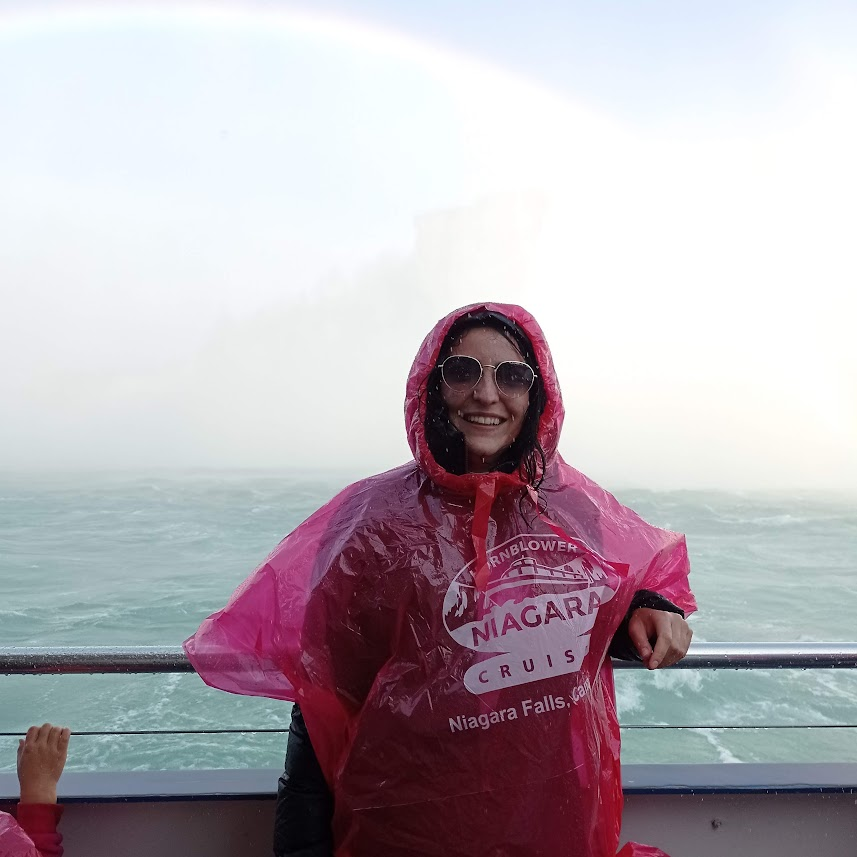

Mi chiamo Serena, ho 31 anni e sono originaria della provincia di Napoli, ma ormai vivo fuori dalla mia città natale da circa otto anni. In questo periodo, ho lavorato in diversi paesi e ho avuto esperienze lavorative variegate. Amo esplorare nuove culture e vivere esperienze che mi arricchiscano a livello personale. Il mio percorso mi ha portato a crescere e a scoprire nuovi interessi, che continuo a coltivare con passione.
Sono una grande appassionata di escursioni e scacchi, due attività che mi permettono di bilanciare il bisogno di movimento con la sfida mentale. Uno dei momenti più importanti per me è stato il completamento del Cammino di Santiago , un’esperienza incredibile che ha segnato profondamente il mio percorso di vita. Le escursioni mi aiutano a connettermi con la natura e a rigenerarmi, mentre gli scacchi mi offrono la possibilità di allenare la mente e migliorare le mie strategie.
Sono una persona curiosa e dinamica, sempre pronta a partire per nuove avventure. Amo viaggiare e scoprire nuovi luoghi, ma mi piace anche cucinare e sperimentare in cucina, attività che trovo rilassanti e creative. Adoro i gatti, anche se non ne ho ancora uno a causa del mio stile di vita movimentato. Nonostante tutto, cerco di trovare momenti di tranquillità per rilassarmi e godermi la semplicità delle piccole cose.

Le mie competenze
- Utilizzare Visual Studio Code
- Conoscenze di base di HTML
Competenze da acquisire
- Approfondire conoscenze di HTML
- Imparare CSS
- Imparere JavaScript
| Lavoro | Paese |
|---|---|
| Bartender | Regno Unito |
| Impegato in una fattoria | Australia, Nuova Zelanda |
| Assistente di volo | Svezia |
| Disney's cast member | USA |
| Disney's cast member | USA |